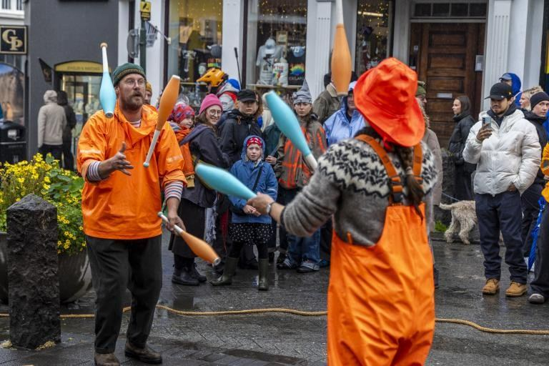

Festivals · Culture
Reykjavík Culture Night 2027 (Menningarnótt)
- Dates
- Location
- Reykjavík, Iceland
- Format
- In-person
- Category
- Culture
- Industry
- Culture
- Organiser
- City of Reykjavík
- Official website
- https://reykjavik.is/en/culture-night
About
Dates are local civil dates in Iceland (Atlantic/Reykjavik).
Topics: culture night, city festival, arts, public celebration.
No organiser attendance figure found on the official pages fetched 24 Nov 2026. Ranked by our estimated size tier 'large' (30,000-100,000 attendees/visits), a judgement from format, venue and scale, not an official number.